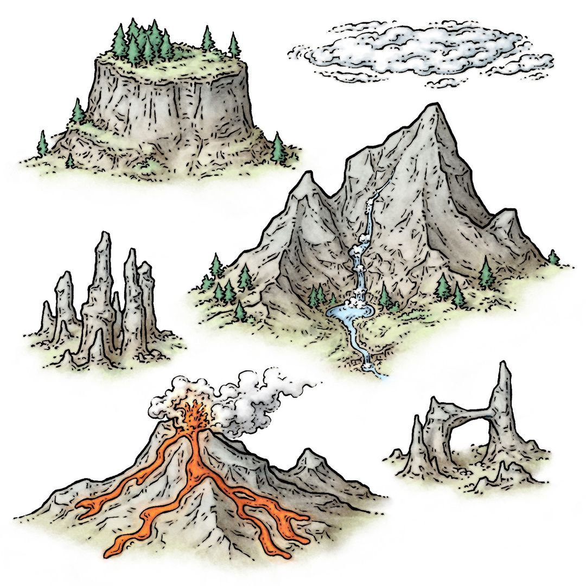
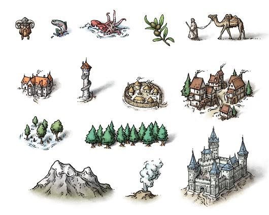
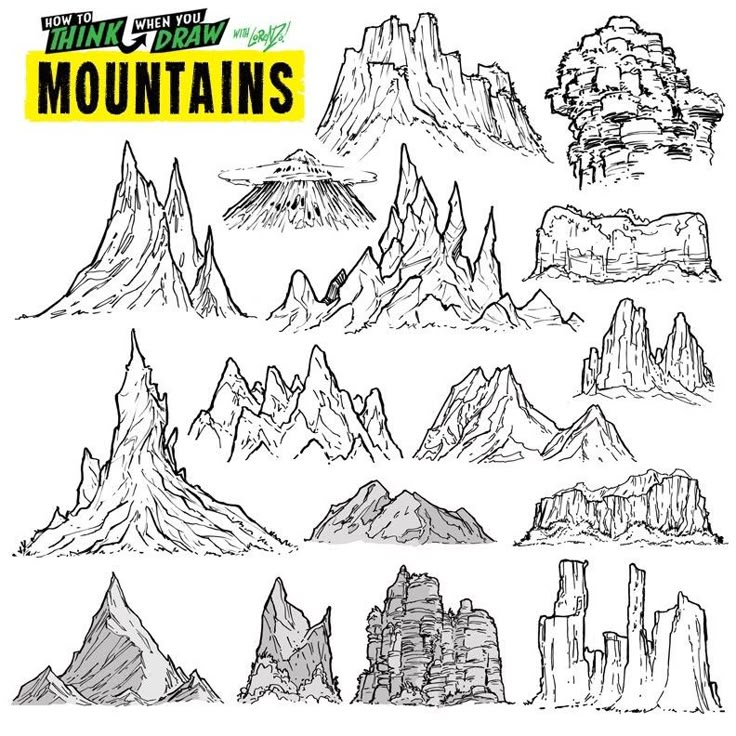
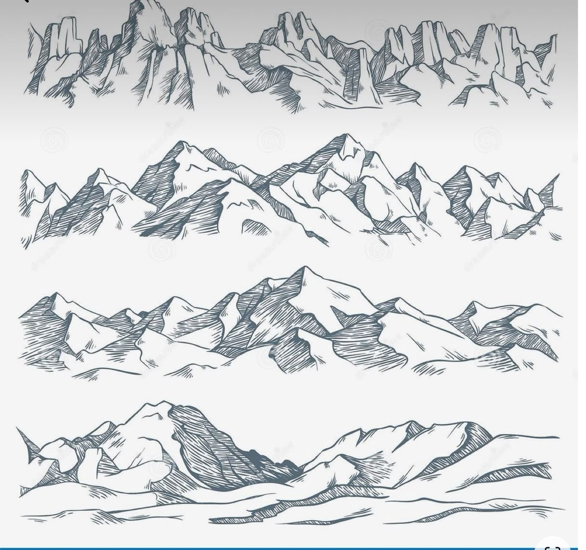
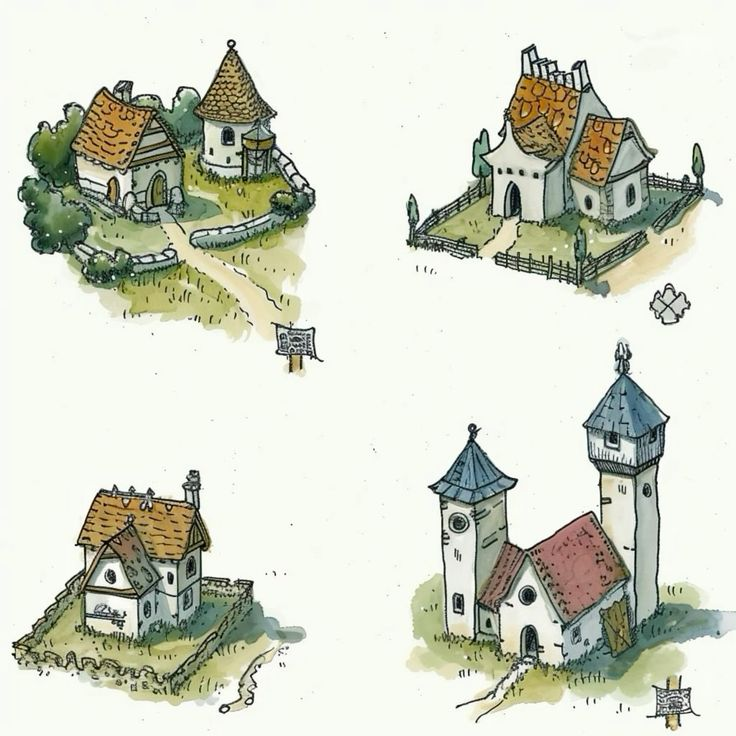
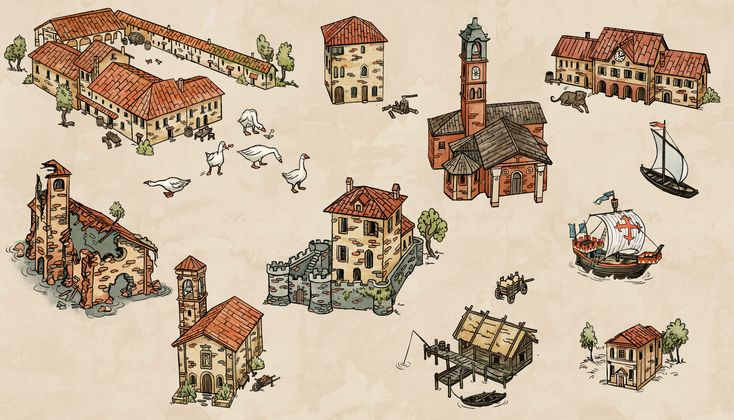
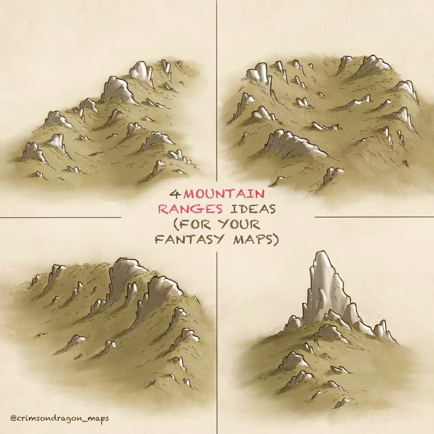

R01 · Близкий стильГоры Mike SchleyГлавный ориентир по камню, живому штриху и приглушённой зелени. Формы совпадают с текущим набором — новые силуэты отсюда не копируем.Открыть пин ↗
R02 · Близкий стильПоселения, дома и горыБлизкий масштаб деталей и спокойная заливка. Полезны плотные группы крыш, разная толщина контура и соотношение зданий с деревьями. Автор по этому пину не подтверждён.Открыть пин ↗
R03 · Конструкция и композицияHow to Think When You Draw — MountainsРазные геологические формы: складки, эрозия, разветвлённые отроги. Берём принципы построения; цвет и характер заливки — из нашего набора.Открыть пин ↗
R04 · Конструкция и композицияЧетыре типа многослойных хребтовПередние отроги перекрывают задние, вершины связаны седловинами. Источник новых композиций с глубиной; не переносить чёрно-белую палитру.Открыть пин ↗
R05 · Конструкция и композицияMedieval map — Oleg SeleznevКомпактные, различающиеся планы замков, осмысленные крыши и башни. Перед генерацией адаптировать цвет камня и крыш. Доступен по ссылке; локальная копия не сохранена.Открыть пин ↗
R06 · Конструкция и композицияКрепости и хозяйственные постройкиНерегулярные кольца стен, плотные дворы, разновысокие корпуса. На изображении указан CELEZART. Доступен по ссылке; локальная копия не сохранена.Открыть пин ↗
R07 · Близкий стильSettlement cartography icon — ViktorsartЖивой неравномерный контур, светлая акварель, собранные небольшие постройки. Один из лучших ориентиров для домов; Viktorsart — имя профиля пина.Открыть пин ↗
R08 · Конструкция и композицияИтальянская деревня — Oleg SeleznevКонструкции пристроек, хозяйственные дворы, опоры навесов, разные функции построек. Убрать фон бумаги, смягчить красный, приблизить штрих к R01/R02.Открыть пин ↗
R09 · Конструкция и композицияУкреплённые города — Fantasy Map AssetsПлотная застройка, выразительная высотная иерархия, несколько колец стен. Создать собственный правдоподобный план, не повторять перегруз одинаковыми башнями. Локальная копия не сохранена.Открыть пин ↗
R10 · Конструкция и композицияЧетыре горные системы — Crimson Dragon MapsОбщие основания гребней, низкие отроги, седловины и вытянутые складки. Особенно полезно для предгорий; добавить каменную фактуру Map, не переносить мягкое размытие.Открыть пин ↗